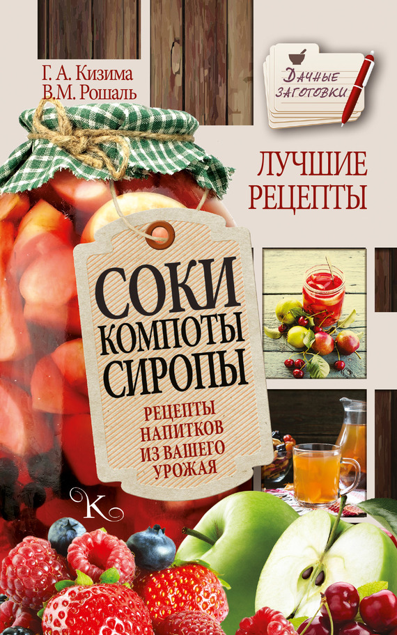

Соки разные : Пиво .

Пиво
Пиво из одуванчиков
400 г растений одуванчика, с корнями, 2 лимона, 2 л воды, 800 г сахара, 60 г винного камня (виннокислого калия), 1cm. пивных дрожжей.
Собрать молодые растения одуванчика целиком, хорошо промыть, мелкие корешки отрезать, прикорневые розетки оставить.
Положить в кастрюлю, добавить сок и измельченные корки лимонов, влить воду и кипятить 15 мин.
Отцедить жидкость горячей, добавить сахар и винный камень. Когда смесь остынет, добавить пивные дрожжи, плотно закрыть, оставить на 3 дня при комнатной температуре.
Разлить в темные бутылки, очень плотно закрыть, оставить на неделю, после чего пиво готово.
Можжевеловое пиво
200 г ягод можжевельника, 50–60 г меда, 1/3палочки дрожжей, 2–2,5 л воды.
Свежесобранные ягоды залить водой и кипятить 30 мин., затем откинуть на дуршлаг или процедить через марлю в горячем виде. Отвар охладить.
Добавить к отвару мед и дрожжи, перемешать и поставить в темное место для брожения.
Когда дрожжи всплывут и покажется пена, снова перемешать и разлить по бутылкам. Плотно закрыть и оставить на неделю в прохладном месте.
Это пиво известно в Шотландии с древних времен.
Рецепт А. Носова.
Домашнее пиво без солода
На 7 л пива потребуется 1 кг ячменя или овса, 300 г меда, 10 г хмеля, 10 г дрожжей.
Зерна ячменя или овса обжаривают на сковороде за несколько приемов, не допуская не только их подгорания, но даже зарумянивания. Затем их слегка измельчают в кофемолке (сильное измельчение в порошок не рекомендуется).
Засыпают их в кастрюлю и заливают 1 л горячей воды (65–70 °C), хорошо размешивают и дают настояться 3 ч. Затем сусло аккуратно сливают в отдельную емкость и гущу еще раз заливают 0,5 л горячей воды, настаивают еще 2 ч и сливают в ту же емкость, что и в первый раз. Добавляют еще 0,5 л, но теперь уже холодной воды, настаивают 1,5 ч и сливают в ту кастрюлю, в которой уже находятся первые два сусла.
Вливают в сусло 300 г меда, разведенного 5 л теплой воды, добавляют 10 г хмеля (ст. ложка измельченных свежих или сухих шишечек хмеля), 10 г дрожжей (1 ч. ложка) и оставляют в теплом месте до тех пор, пока пиво не перебродит.
После этого пиво процеживают и оставляют постоять в открытой посуде еще 3 дня. Затем закупоривают и держат в прохладном месте еще 2 недели.